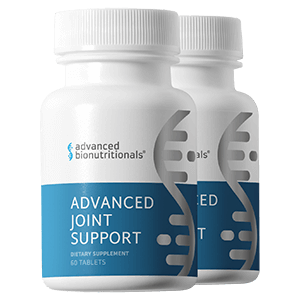

Advanced Joint Support
Product profile · Marketplace data 2026-10-09 · Sales-page research 2026-10-09 · Categories: Health & Fitness, Food Supplements

Marketplace record
| Product type | Supplements - health |
|---|---|
| Price | $78.25 (Single payment) |
| Affiliate commission | 60% |
| Refund window | Per the vendor's sales page — check the official page before buying |
| Vendor | soundview (listed since 2025-03-25) |
| Marketplace stats* | Cart conversion — · cancel rate — · affiliate earnings/sale $46.95 |
* Vendor-side marketplace statistics reported by Digistore24; they depend on traffic quality and are not a forecast.
Vendor's marketplace description
Are you ready to maximize your earnings? Join us in promoting Advanced Joint Support and earn an exclusive 60% commission on a top-performing product that helps customers reduce joint discomfort, improve mobility, and support cartilage health naturally! Why promote Advanced Joint Support? High conversion rates: Customers report noticeable relief in as little as 7 days! Powerful benefits: Reduces i…
From the vendor's sales page
Page title: Beat Joint Pain with CUCUMBERS?
Meta description: Cutting Edge Nutraceuticals Formulated By Doctors
Headline
Beat Joint Discomfort with CUCUMBERS ?
Beat Joint Discomfort with CUCUMBERS?
Section headlines
- Prime Bonus Earn TRIPLE Loyalty Points on Every Purchase!
- In clinical studies, this special cucumber extract reduced joint discomfort by a whopping 70%. It worked better than glucosamine-chondroitin. And it blocks the nasty enzymes that destroy your cartilage.
- In clinical studies, this special cucumber extract reduced joint discomfort by a whopping 70%. It worked better than glucosamine-chondroitin. And it blocks the nasty enzymes that destroy your cartilage.
- The Missing Mineral That Erases Joint Discomfort
- Improves The Cushioning Between Your Joints
- It Makes Glucosamine Work Even Better
- A Natural Support For Joint Health and Mobility
- An Ancient Herb for Joint Support
- Powerful Support for Joint Comfort and Mobility
- The Better Form of Turmeric
Prices mentioned on the page: $132.49 · $57.95 · $69.95, · $6.95 · $188.85, · $21.00 · $62.95 · $347.70, · $72.00 · $69.95 · $419.70 · $347.70
Guarantee language found: “90” — always confirm the current terms on the official page before relying on it.
CTA buttons: “Order Now” · “Add To Cart” · “Joint Support” · “Get Report!”
Opening copy
Cucumbers ? Are you kidding? That’s the reaction I get when I tell my patients the news. Because you may not think the lowly cucumber packs much of a medicinal punch. But what you may not know is that a special type of cucumber has been used as medicine for over 3,000 years.
Roman doctors used it as far back as 77 B.C. to relieve insect bites. Cleopatra used it on her eyes to fight inflammation and puffiness. Christopher Columbus brought it on board his ships to keep his crew healthy.
And when modern-day scientists looked at this special type of cucumber, they were surprised, too. They found it contains 73 different compounds with powerful antioxidant and soothing action.
Research method: raw HTML fetch · 4749 words on page · quality: rich · researched 2026-10-09. Full research file (MD) ↗
Where to check it out
Read the vendor's full sales page (current price, guarantee terms and bonuses are listed there):
View official sales page
That link is an affiliate link — if you buy through it we earn a commission from the vendor at no extra cost to you.